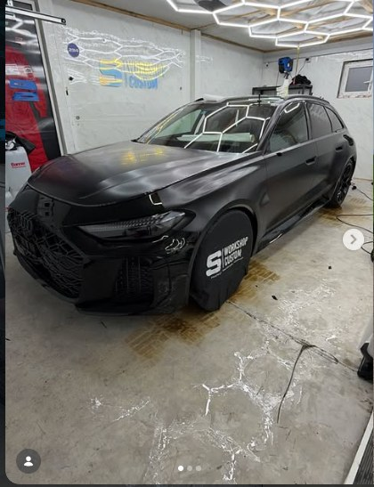
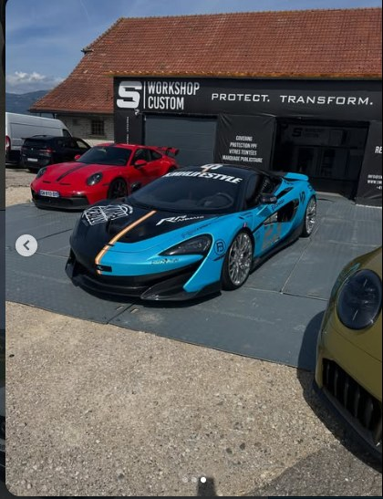
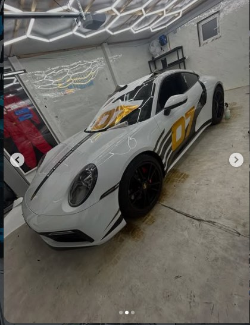

PRIME AUTO STUDIO / O QUE FAZEMOS
CADA DETALHE
FAZ A DIFERENÇA.
Proteção, transformação e cuidado automóvel. Descobre as áreas de serviço apresentadas nesta demonstração.
Explorar serviçosSERVIÇOS
O TEU AUTOMÓVEL.
A TUA VISÃO.
Quer o objetivo seja proteger a pintura, alterar o visual ou cuidar dos acabamentos, cada intervenção começa por compreender o resultado pretendido. Explora as diferentes possibilidades.

01 / PROTEÇÃO
PAINT PROTECTION
FILM — PPF
Película de proteção transparente ou com acabamento específico, pensada para ajudar a preservar a pintura contra marcas superficiais e agressões do dia a dia.
A escolha da película, a cobertura e as condições de aplicação são avaliadas para cada automóvel.

02 / TRANSFORMAÇÃO
WRAPPING
AUTOMÓVEL
Uma forma de transformar a identidade visual de um veículo através de vinis, combinações de cores e diferentes acabamentos.
O resultado é pensado de acordo com o automóvel e com o estilo pretendido.

03 / CUIDADO
AUTO
DETAILING
O cuidado automóvel está nos pormenores: limpeza, apresentação e atenção aos acabamentos que valorizam o aspeto do veículo.
Os procedimentos concretos e a sua disponibilidade devem ser confirmados diretamente com a Prime Auto Studio.

04 / EXPRESSÃO
PERSONALIZAÇÃO
À MEDIDA
Grafismos, detalhes visuais e conceitos que dão ao automóvel uma presença distinta. Uma abordagem focada na personalidade de cada projeto.
Cada proposta depende da viabilidade e dos materiais escolhidos.
PRIME AUTO STUDIO
O PRÓXIMO PROJETO
PODE SER O TEU.
Fala sobre o que imaginas para o teu automóvel e descobre as opções disponíveis.